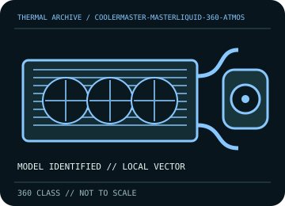

[ INDIVIDUAL COMPONENT // COOLING ]
Cooler Master MasterLiquid 360 Atmos
360 mm Atmos AIO with a 27.2 mm aluminum radiator, three 120 mm fans, and low-profile pump/block.

IDENTIFICATION: Match the complete model, regional SKU, revision, and supplied socket kit. Similar names and radiator classes do not guarantee identical brackets, dimensions, leads, or warranty terms.
Manufacturer specifications and compatibility
| Exact model / listing | Cooler Master MasterLiquid 360 Atmos |
|---|---|
| Radiator dimensions and thickness | 394 × 119 × 27.2 mm aluminum radiator; 360 mm class. With 25 mm fans, allow approximately 52.2 mm before fittings and tube bends. |
| Fans | 3 × 120 × 25 mm fans; published speed range 690–2,500 rpm. Fans use PWM; lighting wiring is separate and must follow the supplied harness. |
| Pump / block | Pump housing 84.9 × 81 × 53.15 mm; connect pump power/tach using the labeled lead and the installation guide. |
| Supported CPU sockets | Intel LGA 1700 / 1200 / 115x; AMD AM5 / AM4. Verify the exact included retention kit before fitting. |
| Tube length / construction | Use the supplied flexible sleeved tubing; confirm reach and routing from the unit before fastening the radiator. Do not kink or twist the hoses. |
| Power, fan, lighting, and display connectors | Use the included PWM fan split/harness and pump connector as labeled; connect lighting only to its supported 5 V ARGB connection/controller, never 12 V RGB. Follow the product guide for any USB/controller lead included in the exact bundle. |
| Warranty | Cooler Master publishes a 5-year limited warranty for this model family; check region, purchase date, serial, and exact product code in current terms. |
| Case compatibility | Requires 360 mm radiator support. Radiator plus 25 mm fans is about 52.2 mm thick; check radiator rail length, top/front placement, motherboard heatsinks, RAM, and GPU clearance. |
| Motherboard compatibility | Supports the listed Intel/AMD desktop sockets when the correct included bracket is used. Check header labels and board clearance; do not assume RGB sync is available without a 5 V ARGB header/controller. |
Warranty, maintenance, and safe installation
A sealed loop is not user-refillable unless the exact manual says otherwise. Remove dust with power disconnected and fan blades held still; inspect radiator, hose sleeves, and fittings. Stop using the unit if a leak, abnormal pump noise, or loss of flow is suspected.
- Install only with the model-specific manual and included retention hardware. Do not operate a pump dry or allow tubes to kink or rub against sharp edges.
- After installation, verify pump and fan tachometer/control operation and monitor CPU temperature under a repeatable load before normal service.
- Warranty statements are a reference, not a substitute for current regional terms; preserve the serial number and purchase record and contact the manufacturer for service.
Manufacturer sources
- Cooler Master — MasterLiquid 360 Atmos product specificationsManufacturer radiator, pump, fan, socket, and product specifications.
- Cooler Master — Guides and ResourcesManufacturer support and guide/download entry point; use the model-specific Atmos installation guide and warranty terms.
Static catalog reference only. Verify the precise SKU, manual revision, and current local warranty documentation before installation.